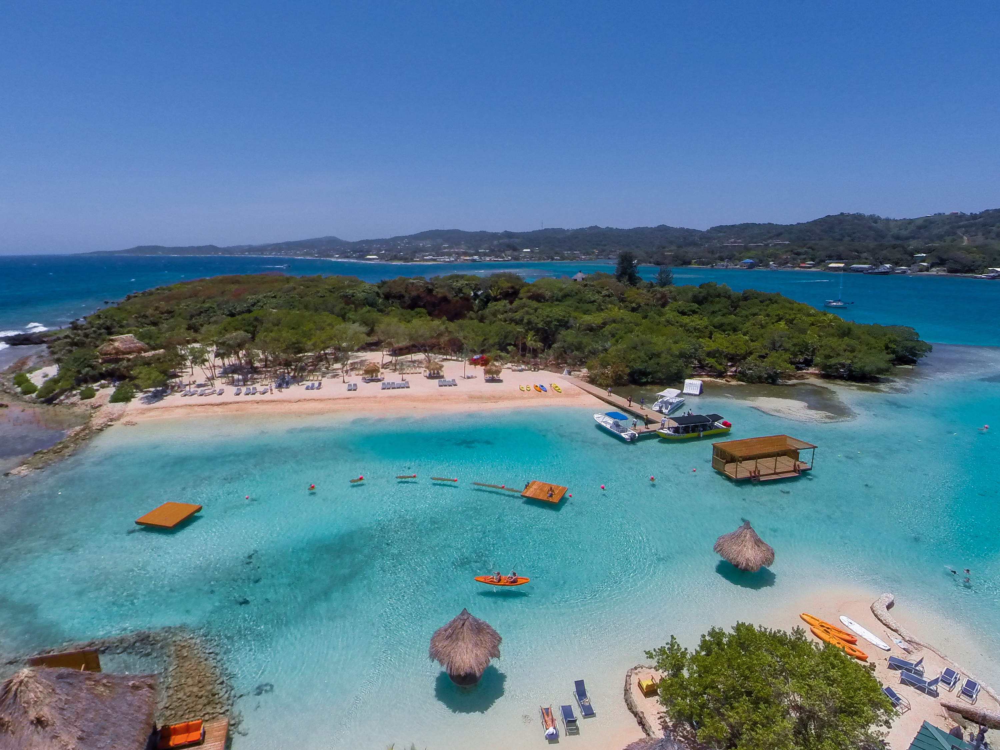

Lugares Turísticos Destacados

Ruinas de Copán
Un tesoro de la civilización maya, famoso por sus jeroglíficos y esculturas. Declarado Patrimonio de la Humanidad por la UNESCO.

Islas de la Bahía
Un paraíso caribeño perfecto para bucear, relajarte en playas de arena blanca y disfrutar de aguas cristalinas.

Parque Nacional La Tigra
Un bosque nublado lleno de biodiversidad, ideal para los amantes del senderismo y la naturaleza.